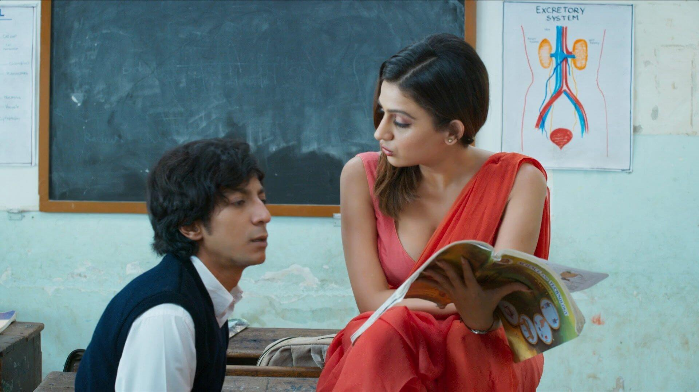
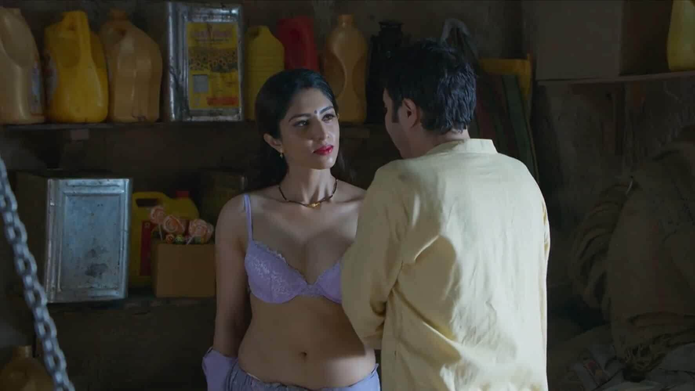
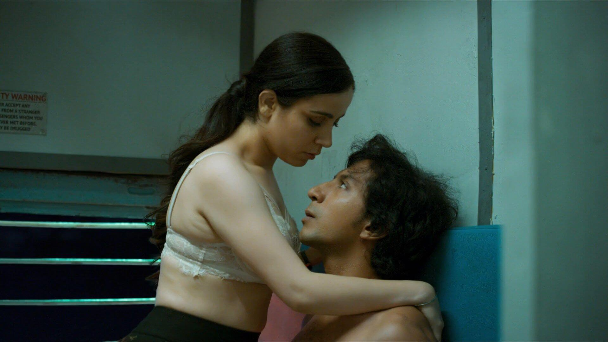

Mastram Season 1
Language: Hindi
Starting Date: April 30,2020
Ending Date: April 30,2020
Genre: Erotic,Drama
Duration: 19-20 minutes
Seasons: 1
Episode: 10
 7/10
7/10 7.8/10
7.8/10
Click To See Every Ratings
 Watch Now
Watch Now
Where To Watch(Officially)

Description
Main Cast with Roles
Director: Aryan Sunil
Meet Mastram, the quintessential writer of the 80s who spoke the lingo of the Hindi heartland - literally. The 10 episodes feature stories of passion intertwined with turbulent day-to-day scenarios from Mastram's real life.SourceIMDBPlot
Mastram Season 1 All Episodes
| Epsiode | Title | Poster |
|---|---|---|
| S1-Ep1 | Khali Bus Ka Suhana Safar |
Rajaram's failure births Mastram's success. Acting on his friend Gopal's advice , a rejected , boring writer soon becomes Mastram, the author of a best-seller.With everyone lusting for sultry siren Rani, how long do you think will Mastram last?
| S1-Ep2 | MasterJi Ka Danda |  |
After Rajaram becomes a hit author as Mastram, his uncle advises him to think about meeting a girl for marriage. Meanwhile, Rajaram gives birth to another saucy story. How will his meeting with the girl go? How will his next book fare?
| S1-Ep3 | Mallu Aunti Ka Malmal |
Rajaram's personal life is going pretty normal, except that he is facing a writer's block and is unable to find inspiration. As fate would have it, Rajaram's new neighbour, an unsatisfied Malayali wife, becomes the centre of his fantasies.
| S1-Ep4 | Baniye Ka Lollypop |  |
Rajaram has his first date with Madhu. At the same time, he comes across another such scene where the inspiration for his next story comes from. With this, his next book revolving around the Baniya and the Chhoti Bahu starts to develop.
| S1-Ep5 | Bua Ke 56 Aasan |
Just as Rajaram's personal life is settling down and his happiness with Madhu is growing, another person enters his life. He meets Madhu's widowed aunt, who is quite young. Will this result in further cementation of the relationship?
| S1-Ep6 | Vaibhav Ki Didi |
Rajaram's mama proposes that they must go to Delhi for the wedding shopping. After checking into a hotel, he runs into trouble with the police. Rajaram rushes to save his uncle. Memories and teenage fantasies resurface.
| S1-Ep7 | Abhineteri Ka Nirman |
To find peace to write his next story, Rajaram decides to go to Chamba. On arriving in Chamba he finds out that the actress Indurekha is there. In order to impress her, he makes a new story on the concept of the casting couch.
| S1-Ep8 | Madhu Ki Do Saheliyan |
After Rajaram's return, Madhu begins to doubt him. Her friends then decide to test Rajaram's loyalty. Two girls invite him over for an offer he can't refuse. Will he take the offer, or will he stand victorious in Madhu's test?
| S1-Ep9 | Sonu Ka Joban |
As turbulence hits his personal life, Rajaram decides to pen down a letter to Madhu, calling it quits. Meanwhile Raju's wife falls for the Sarpanch. The ongoing chemistry is noticed by Rajaram and he decides to put the story into words.
| S1-Ep10 | All |  |
Rajaram along with his family is travelling to Mumbai in a train. Things turn wild when sparks fly between the TC and Rajaram. What follows is intense passion moments between the couple. However, little does Rajaram know that Madhu is also onboard in the same train. Follow the journey of a young man who finds a career in writing, but the sort that could not be revealed to everyone.
SourceWikiPedia
Would''ve been stuck in UK amid COVID-19: Anshuman Jha on cancelling shoot of directing debutBy:Outlook India - 05 May,2020


Mastram Season 1 Poster
Videos
Trailer
Uncensored Trailer
Official PromoMore Videos